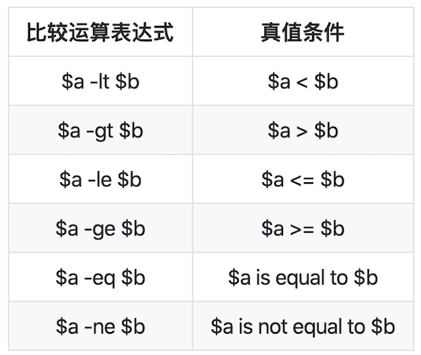

Linux系统与网络管理
黄玮
第四章：shell脚本编程基础
Don’t repeat yourself
Hello World
扫码或点击图片「零安装、零配置」直接在浏览器里体验 Bash 编程
备用在线 Bash 解释器和编辑器环境
#!/usr/bin/env bash
echo "hello world!"详解
- 注释符号 #
- 文件起始处的
#!声明自己是一个脚本文件 - 当前shell脚本默认使用的解释器
- 查看当前正在使用shell解释器
ps | grep $$- 查看当前shell解释器对应的文件绝对路径
type bash- 查看当前bash的版本号
bash --version为什么使用
#!/usr/bin/env bash
当我们通过 ./target.sh 执行脚本时：
- 避免目标系统上的解释器路径和预期不一致
- 例如同时存在多个版本的
Bash，通过环境变量设置的优先解释器路径不同于期望的
/bin/bash
- 例如同时存在多个版本的
Bash，通过环境变量设置的优先解释器路径不同于期望的
类似的我们可以在 Python 脚本文件行首书写
#!/usr/bin/env python例外：如果就是希望指定路径的脚本解释器执行当前脚本，而非环境变量中设置的优先脚本解释器
如果我们通过 bash target.sh 或
/bin/bash target.sh
执行脚本则上述设置相当于原本的注释行作用
Shell 内置帮助
help type
help help变量
PRICE_PER_APPLE=5
MyFirstLetters=ABC
greeting='Hello world!'- 变量名区分大小写
- =左右两边不能有空格
- 单引号包围的字符串中不对特殊符号做解释执行
- 双引号包围的字符串中对特殊符号解释执行
- 使用 \ 转义特殊符号避免被解释执行
PRICE_PER_APPLE=5
echo "The price of an Apple today is: \$HK $PRICE_PER_APPLE"- 使用 ${} 包围变量名避免变量名被解释执行时的二义性
MyFirstLetters=ABC
echo "The first 10 letters in the alphabet are: ${MyFirstLetters}DEFGHIJ"- 使用双引号 ““ 包围变量名可以保留所有空格字符
greeting='Hello world!'
# 此处实际上实现了一个字符串 拼接/连接 操作
echo $greeting" now with spaces: $greeting"- 其他程序的输出结果直接赋值给shell变量
FILELIST=`ls`
FileWithTimeStamp=/tmp/file_$(/bin/date +%Y-%m-%d).txt上述代码中的 `` 符号和 $() 都可以用于命令输出结果替换变量赋值结果。
课堂练习
#!/usr/bin/env bash
# 代码填空，使用最终输出3个包含correct的语句
BIRTHDATE= # 填入一个字符串
Presents= # 填入一个整数
BIRTHDAY= # 使用命令替换方法赋值
# 测试代码 - 勿修改
if [ "$BIRTHDATE" == "Jan 1 2000" ] ; then
echo "BIRTHDATE is correct, it is $BIRTHDATE"
else
echo "BIRTHDATE is incorrect - please retry"
fi
if [ $Presents == 10 ] ; then
echo "correct! I have received $Presents presents"
else
echo "Presents is incorrect - please retry"
fi
if [ "$BIRTHDAY" == "Saturday" ] ; then
echo "correct! I was born on a $BIRTHDAY"
else
echo "BIRTHDAY is incorrect - please retry"
fi提示：可以使用以下方法将形如”Jan 1 2000”的日期时间字符串$date1转换出星期几
date -d "$date1" +%A脚本调试的方法
# 调试模式运行，逐行执行“命令”并打印“命令”接受的输入参数值
$ bash -x <script.sh>
# 代码片段临时开启调试模式
set -x # activate debugging from here
w
set +x # stop debugging from here
# 写文件
echo -e "$msg" >> /tmp/debug.log
# 如果打印变量内容包含「不可打印字符」
# msg="hello world\x01\x02"
echo -n -e "$msg" | xxd -p >> /tmp/debug.log给脚本传参
- 参照使用C语言代码编写的命令行可执行程序传参语法规范
- 参数与参数之间、脚本文件名与参数之间使用1个或多个空格分隔
$0指代脚本文件本身$1指代命令行上的第1个参数$2指代命令行上的第2个参数，以此类推其他参数的脚本内引用方法$@指代命令行上的所有参数（参数数组）$#指代命令行上的参数个数（参数数组大小）
#!/bin/bash
# 将本段代码复制粘贴保存为一个文件，假设文件名为：test.sh
echo $3 # --> results with: banana
BIG=$5
echo "A $BIG costs just $6"
# 输出所有参数
echo "$@"
# 以下代码输出命令行参数的总数
echo $#用以下方法执行该脚本，观察脚本输出结果
bash test.sh apple 5 banana 8 "Fruit Basket" 15数组
- Bash 4.0 开始支持关联数组
declare -a声明的是「索引」数组，declare -A声明的是「关联」数组。如果同时使用-a -A，-A优先级更高，数组被声明为「关联」数组- Bash
4.2 开始支持
declare -g方式声明关联数组为「全局」变量，在此之前，关联数组仅限局部变量作用域
示例
# 查看当前 Bash 的 declare 支持的参数
# help declare
# 声明一个「索引」数组
declare -a indexed_arr
# 声明一个「关联」数组
declare -A associative_arr
# Bash 数组赋值方法如下
# 「索引」数组可以跳过数组声明直接赋值的同时即完成了数组初始化
my_array=(apple banana "Fruit Basket" orange)
associative_arr['hello']='world'
associative_arr['well']='done'
# bash支持“稀疏”数组：即数组元素不必连续存在，个别索引位置上可以有未初始化的元素
new_array[2]=apricot
# 数组元素的个数通过 ${#arrayname[@]} 获得
echo ${#my_array[@]}
# 随机读取数组中的元素，{}是必须有的
echo ${my_array[2]}
# echo $my_array[2] 是错误的读取方法
# 遍历数组的方法
## 「索引」数组
for ele in "${my_array[@]}";do
echo "$ele"
done
## 「关联」数组
for key in "${!associative_arr[@]}";do
echo "$key ${associative_arr[$key]}"
done课堂练习
#!/bin/bash
NAMES=( John Eric Jessica )
# 代码填空，使得以下代码避免输出failed关键字
NUMBERS=() # 构造包含1到10整数的数组
STRINGS=() # 构造分别包含hello和world字符串的数组
NumberOfNames=0 # 请使用动态计算数组元素个数的方法
second_name='' # 读取NAMES数组的第2个元素值进行赋值
# 测试代码 - 勿修改
T_NUMBERS=$(seq 1 10)
T_STRINGS=(hello world)
# Test Case 1
i=0
for n in ${T_NUMBERS[@]};do
if [[ ${n} -ne ${NUMBERS[${i}]} ]];then
echo "failed in NUMBERS test"
fi
i=$((i+1))
done
# Test Case 2
i=0
for n in ${T_STRINGS[@]};do
if [[ "${n}" != "${STRINGS[${i}]}" ]];then
echo "failed in STRINGS test"
fi
i=$((i+1))
done
# Test Case 3
if [[ $NumberOfNames -ne ${#NAMES[@]} ]];then
echo "failed in NumberOfNames test"
fi
# Test Case 4
if [[ "${NAMES[1]}" != "${second_name}" ]];then
echo "failed in Array Element Access test"
fi基本算术运算
使用 $((expression)) 算术运算符表达式，注意这种方式只支持 整数运算
A=3
B=$((100 * A + 5)) # 305- a + b addition (a plus b)
- a - b substraction (a minus b)
- a * b multiplication (a times b)
- a / b division (integer) (a divided by b)
- a % b modulo (the integer remainder of a divided by b)
- a ** b exponentiation (a to the power of b)
# 进阶算术运算请使用命令行工具 bc
# 计算 4 * arctangent(1) ，计算结果保留 10 位有效数字
# -l 表示使用标准数学库
pi=$(echo "scale=10; 4*a(1)" | bc -l)
# 计算 4 * arctangent(1) ，计算结果保留 1000 位有效数字
# 禁止输出结果因超长而自动折行
pi=$(BC_LINE_LENGTH=0 bc -l <<< "scale=1000; 4*a(1)")基本字符串操作
# 获得字符串长度值
STRING="this is a string"
echo ${#STRING} # 16
# 注意非拉丁语系字符串长度计算
M_STRING="中文"
export LC_ALL=C.UTF-8
echo ${#M_STRING} # 2
export LC_ALL=C
echo ${#M_STRING} # 6
# 字符串截取子串
STRING="this is a string"
POS=1
LEN=3
echo ${STRING:$POS:$LEN} # his
echo ${STRING:1} # $STRING contents without leading character
echo ${STRING:12} # ring
# 注意非拉丁语系字符串截取
export LANG=C
echo -n "${M_STRING:0:1}" | xxd -p # e4
export LANG=C.UTF-8
echo -n "${M_STRING:0:1}" | xxd -p # e4b8ad
# 字符串查找并替换第一次匹配到的子串
STRING="to be or not to be"
echo ${STRING[@]/be/eat} # to eat or not to be# 字符串查找并替换所有匹配到的子串
STRING="to be or not to be"
echo ${STRING[@]//be/eat} # to eat or not to eat
# 字符串查找并删除（替换为空）所有匹配到的子串
STRING="to be or not to be"
echo ${STRING[@]// not/} # to be or to be
# 字符串查找并替换匹配到行首的子串
STRING="to be or not to be"
echo ${STRING[@]/#to be/eat now} # eat now or not to be
# 字符串查找并替换匹配到行尾的子串
STRING="to be or not to be"
echo ${STRING[@]/%be/eat} # to be or not to eat
# 字符串查找并使用子命令输出结果替换匹配项
STRING="to be or not to be"
echo ${STRING[@]/%be/be on $(date +%Y-%m-%d)} # to be or not to be on 2012-06-14条件判断
if [ expression ]; then
# code if 'expression' is true
elif [ expression ]; then
# code if 'expression' is true
else
# other conditions
fi[实质上命令test的另一种形式，[[是一种更符合你期望的test命令[符合 POSIX 标准，[[不符合 POSIX 标准- 现代 Linux 发行版自带的 shell 环境普遍支持
[[，推荐优先使用（除非需要考虑兼容古老 shell）
bash支持的表达式类型
- 单个字符串（常量）或者变量
- 恒假表达式
- 空字符串
- 未定义变量名
- 逻辑运算符
- ! 取反
- && 逻辑与
- || 逻辑或
- 使用逻辑运算符构成的条件表达式应使用 [[ ]]包围
小测验
# 以下代码执行完毕后的输出结果是什么？
if [[ 0 ]];then printf "%d" 0;fi
if [[ 1 ]];then printf "%d" 1;fi
if [[ true ]];then printf "%d" 2;fi
if [[ false ]];then printf "%d" 3;fi
if [[ '' ]];then printf "%d" 4;fi
if [[ ' ' ]];then printf "%d" 5;fi
if [[ 'true' ]];then printf "%d" 6;fi
if [[ 'false' ]];then printf "%d" 7;fi
if [[ '$mamashuozhegebianliangbukenengdingyiguo' ]];then printf "%d" 8;fi
if [[ "$mamashuozhegebianliangbukenengdingyiguo" ]];then printf "%d" 9;fi01235678
数值比较运算表达式

字符串比较表达式

注意：上面表达式中的双引号不能省略，避免字符串中包含的空格会改变表达式的语义
选择条件分支
case "$variable" in
"$condition1" )
command...
;;
"$condition2" )
command...
;;
esac一个实例
mycase=1
case $mycase in
1) echo "You selected bash";;
2) echo "You selected perl";;
3) echo "You selected phyton";;
4) echo "You selected c++";;
5) exit
esac循环
for循环
# basic construct
for arg in [list]
do
command(s)...
done
# 单行结构
for arg in [list];do command(s)...;done2个实例
# loop on array member
NAMES=(Joe Jenny Sara Tony)
for N in ${NAMES[@]} ; do
echo "My name is $N"
done
# loop on command output results
for f in $(ps -eo command) ; do
ls "$f"
donewhile循环
# basic construct
while [ condition ]
do
command(s)...
done
# 模拟 do .. while 循环
while [ : ];do
if [ condition ];then
break
fi
command(s)...
done1个实例
COUNT=4
while [ $COUNT -gt 0 ]; do
echo "Value of count is: $COUNT"
COUNT=$(($COUNT - 1))
done
COUNT=4
while [ : ]; do
echo "Value of count is: $COUNT"
COUNT=$(($COUNT - 1))
if [[ $COUNT -eq 0 ]];then
break
fi
doneuntil循环
# basic construct
until [ condition ]
do
command(s)...
done说明：until条件为假时，执行循环体内代码。为真时，跳过循环体代码段。
COUNT=1
until [ $COUNT -gt 5 ]; do
echo "Value of count is: $COUNT"
COUNT=$(($COUNT + 1))
done循环控制
- break 跳过本层循环体剩余部分代码并返回上一级代码片段
- continue 跳过本次循环执行剩余部分代码，继续执行下一次循环条件表达式计算判断
break和continue的实例代码
# Prints out 0,1,2,3,4
COUNT=0
while [ $COUNT -ge 0 ]; do
echo "Value of COUNT is: $COUNT"
COUNT=$((COUNT+1))
if [ $COUNT -ge 5 ] ; then
break
fi
done
# Prints out only odd numbers - 1,3,5,7,9
COUNT=0
while [ $COUNT -lt 10 ]; do
COUNT=$((COUNT+1))
# Check if COUNT is even
if [ $(($COUNT % 2)) = 0 ] ; then
continue
fi
echo $COUNT
done# loop on command output results 健壮性改进版本
set -e
for f in $(ps -eo command 2>/dev/null) ; do
[[ -e "$f" ]] || continue
ls "$f"
done
# 下面是改进前的「脆弱」版本，对比执行找不同
set -e
for f in $(ps -eo command) ; do
ls "$f"
done编写健壮的 shell 脚本
Fail-Fast: 避免错误蔓延
- 越早期的 Bug 越容易被检测到、发现，从而可以更快被修复
- 执行过但没「崩溃」的代码都是「无 BUG」的
- 避免一连串 Bug 协同后产生的「雪崩效应」
Fail-Fast 的典型应用场景
- 测试驱动开发
- 持续集成
set -e
脚本只要发生错误，就终止执行
set +e
关闭 -e 选项
set -o pipefail
set -e不能终止管道命令中执行出错的语句- 只要最后一个子命令不失败，管道命令总是会执行成功
set -eo pipefail可以让脚本在更严格的条件下执行
使用静态分析工具
- 程序静态分析是指在不运行代码的方式下，通过词法分析、语法分析、控制流分析等技术对程序代码进行扫描，验证代码是否满足规范性、安全性、可靠性、可维护性等指标的一种代码分析技术。
- 静态分析的一个重要优势是能够在代码中出现大量错误后立刻检测到，因此修复这些错误的成本也不会过高。越早检测到错误，更正错误的成本越低。
shellcheck - shell 脚本静态分析工具
函数
DRY: Don’t Repeat Yourself
函数定义
# 基本定义方法，可移植性最好
function_name () compound-command [ redirections ]
# 现代主流shell解释权均支持的语法，可以避免alias机制污染函数名
function function_name [()] compound-command [ redirections ]函数调用、传参和参数处理
function function_B {
echo "Function B."
}
function function_A {
echo "$1"
}
function adder {
echo "$(($1 + $2))"
}
# 调用函数，传参
function_A "Function A." # Function A.
function_B # Function B.
adder 12 56 # 68课内练习
求2个数的最大公约数，要求：
- 通过命令行参数读取2个整数，对不符合参数调用规范（使用小数、字符、少于2个参数等）的脚本执行要给出明确的错误提示信息，并退出代码执行
进阶主题
- 特殊变量
- 文件读写
特殊变量
$0 # 当前脚本的文件名
$n # 脚本或函数的第N个传入参数
$# # 脚本或函数传入参数的个数
$@ # 脚本或函数传入的所有参数（数组形式）
$* # 脚本或函数传入的所有参数（字符串形式）
$? # 最近一条命令或函数的退出状态码
$$ # 当前shell解释器的进程编号，对脚本来说就是当前脚本解释器的进程编号
$! # 最近一个进入后台执行的进程的进程编号文件读写
# 利用I/O重定向机制
# 清空一个文件（文件大小变为0）
> file
# 用一段文本内容覆盖一个文件
echo "some string" > file
# 在文件尾部追加内容
echo "some string" >> file
# 读取文件的第一行并将其赋值给一个变量
# read是bash的内置函数
# read命令会从标准输入读取一行，并将其赋值给变量line。-r选项表示read将读取原生内容，所有字符都不会被转义，例如反斜线不会用于转义（只是反斜线）。输入重定向命令"<file"会打开文件并执行读操作，并且会将读取的内容以标准输入的形式提供给read命令。
read -r line < file
# read命令会删除特殊变量IFS所表示的字符。IFS是Internal Field Separator（内部字段分隔符）的缩写，它的值为用于分隔单词和行的字符组成的字符串。IFS的默认值为空格符、制表符和换行符组成的字符串。这意味着前导和尾随的空格符和制表符都会被删除。如果你想保留这些字符，你可以将IFS设置为空字符：
IFS= read -r line < file
# 利用外部程序head
line=$(head -1 file)
line=`head -1 file`
# 构造一个「畸形」测试用例
echo -n -e " 123 \x0a456" > file
# 逐行读文件 **有 BUG**
while read -r line; do
# do something with $line
echo "$line" | xxd -p
done < file
# 逐行读文件，防止行两端的空白字符被删除 **依然有 BUG**
while IFS= read -r line; do
# do something with $line
echo "$line" | xxd -p
done < file
# 文件读写的最佳实践
while IFS= read -r line || [[ -n "$line" ]]; do
# do something with $line
echo "$line" | xxd -p
done < file实战例子 - 校园网账号自动登录的bash脚本实现
#!/bin/bash
urls=("https://www.taobao.com" "http://www.qq.com" "https://www.baidu.com")
fbs=("taobao.com" "qq.com" "baidu.com")
count=${#urls[@]}
err=1
bench=`expr $count - $err`
# login variables
uid="[your_uid]"
psw="[your_psw_extracted_from_account.cuc.edu.cn_login_post]" # 注意一定要使用URL编码之后的数据
# cookie文件持久化存储路径
cookie_file="acuc.txt"
UA="Mozilla/5.0 (X11; Linux i686) AppleWebKit/535.1 (KHTML, like Gecko) Chrome/13.0.772.0 Safari/535.1"
# 校园网认证首页
index_url="http://account.cuc.edu.cn/connect/index.jsp"
# 校园网登录API
login_url="http://account.cuc.edu.cn/connect/ws/ws_login.jsp?act=2&userid=${uid}&passwd=${psw}&act=2"
# 校园网认证心跳API
hb_url_0="http://account.cuc.edu.cn/connect/ws/ws_action.jsp?act=4" # 认证成功后，只联接校园网，需要通过该API完成联接互联网
hb_url_1="http://account.cuc.edu.cn/connect/ws/ws_action.jsp?act=6"
hb_url_2="http://account.cuc.edu.cn/connect/ws/ws_action.jsp?act=7"
# 校园网注销API
logout_url="http://account.cuc.edu.cn/connect/ws/ws_login.jsp?act=3"
# 调试用文件路径
log_result="res.html"
isNetworkConnected() {
success=0;
for((i=0;i<$count;i++));do
url=${urls[$i]};
fb=${fbs[$i]};
res=`curl -s -4 -m 5 $url`;
if [[ $res =~ $fb ]];then
((success++));
fi
done
if [ $success -gt $bench ];then
connected=1; # connected to internet
else
connected=0; # connection error
fi
echo $connected;
}
keep_connected() {
curl -k -e "$index_url" -b "$cookie_file" "$hb_url_1"
curl -k -e "$index_url" -b "$cookie_file" "$hb_url_2"
}
log_out() {
curl -k -e "$index_url" -b $cookie_file "$logout_url" # 先注销，再联网，避免重复登录
}
connect_lan() {
# 连接校园网
curl -k -c "$cookie_file" -L -e "$login_url" -A "$UA" -o "$log_result" "$login_url"
}
connect_internet() {
# 连接互联网
curl -k -e "$index_url" -b "$cookie_file" "$hb_url_0"
}
connected=$(isNetworkConnected)
if [ $connected -eq "1" ];then
echo "we are connected!";
# 当前是已联网状态，保持心跳即可
keep_connected
else
# 当前是未联网状态
echo "we are disconnected";
log_out
connect_lan
connect_internet
keep_connected
fi中英文符号对照表
- ` backtick/backquote 反引号
- [ square bracket 方括号
- ’ single quote 单引号
- “ double quote 双引号
- _ underscore 下划线
- / slash 斜线（URL、*NIX 路径分隔符）
- \ backslash 反斜线（转义符号、Windows 路径分隔符）
# 16进制表示的 ascii 码: 7c，英文术语：vertical bar，Shell编程里的“管道操作符”
printf '%s' '|' | xxd
# ref: https://www.zhihu.com/question/21747929/answer/319675621
printf '%s' '丨' | xxd # 16进制表示的 ascii 码: e4b8a8，汉语拼音：gun# ref: https://practicaltypography.com/hyphens-and-dashes.html
# 16进制表示的 ascii 码: 2d，英文术语：hyphen，中文术语：连字符，俗称：短杠
printf '%s' '-' | xxd
# 16进制表示的 ascii 码: e28093，英文术语：en dash
printf '%s' '–' | xxd
# 16进制表示的 ascii 码: e28094，这是中文输入法打出来的破折号的一半，英文术语：em dash
printf '%s' '—' | xxd 推荐阅读
参考C语言的一本经典著作《C Traps and Pitfalls》（中文译名《C 陷阱与缺陷》）的江湖地位和作用，堪为：入门后，进阶必读。
Bash/Zsh 有四种不同运行模式，你的 bash 配置写错地方的话，不但会拖慢 bash 的速度，还会发生明明写了登录配置但是就是没生效的情况
推荐工具
Bash Automated Testing System
Bats is a TAP-compliant testing framework for Bash. It provides a simple way to verify that the UNIX programs you write behave as expected.
VSCode Remote 配置 Bash 集成开发环境
- Bash
IDE
- 跳转到函数定义、查找代码片段引用、自动补全代码、鼠标悬停代码关键词显示帮助文档等
- ShellCheck
- Bash Debug